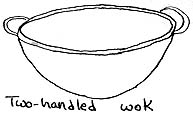
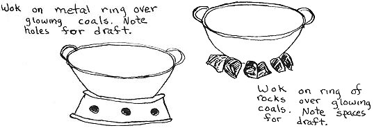
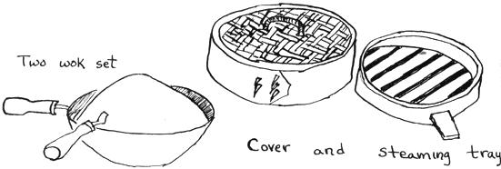

If you want to conserve on cooking space, fuel and time, you need a wok . . . the simple conical metal pan used by the Chinese for centuries. Designed by a people perpetually faced with too little food and fuel, the wok has "doing more with less" written all over it. Only a little heat on its rounded bottom goes a long, long way up its sides and the Chinese practice of cutting food into bite-sized pieces insures that each bit of heat will cook those edibles quickly enough to preserve almost all their fresh taste and nutritional value.
The wok need not be reserved only for Chinese dishes, either. It can easily replace several pans and become the main cooking vessel in any small city apartment in the world . . . and one wok plus one tin can kettle is all you'll need for cooking up a backwoods camping trip's rice, noodles, vegetables, meats, eggs, pancakes and heaven knows what else.
A wok works best over the flame or glowing coals that it was designed for, which makes it a natural for outdoor or fireplace meals. just nestle the pan in a ring of stones (spaced to allow for draft) placed around some glowing coals . . . wood, charcoal, corncob or whatever. The stones will elevate the wok and contain the heat at the same time. A flower pot hibachi of suitable size will also support a wok nicely for outdoor cooking.
Certain modifications must be made if a wok is to be used on a conventional stove. Unless the one you buy is large with a flattish bottom, an adapter ring must be used to support the pan and distribute heat over its bottom six or eight inches. The adapter is also necessary if your wok has only one handle . . . to keep the pan from tilting unbalanced on a flat stove burner. This metal ring has holes cut in its side to allow for draft and the assembly resembles a deep dish pie plate with the bottom cut out . . . in fact, you can probably make your ring out of just such a plate.
Woks have become quite popular the past few years and you probably won't have to go to Chinatown to get one. Most stores that specialize in cooking utensils and offer more than the usual run of Corning and Revere will carry a wok of some sort. I got my twelve-incher at a china-outlet-restaurant-supply store for about three dollars.
Twelve inches (diameter across the top) is a nice size for a wok. It's not too big to use for two, yet big enough to turn out plenty of food-accompanied by rice cooked in a sauce pan-to stuff six or eight people. Don't be dismayed, however, if you have more mouths than that to feed. Since the essence of many wok dishes is quick preparation, it's no problem to cook up two or three batches and serve them all before the first one starts to get cold.
In buying a wok, choose one which has the top edge rolled under so that the rim is smooth . . . the straight rim may not be sharp enough to cut you, but it might be unpleasant to work with and it certainly makes the wok more susceptible to dents. Two handles (wood or smooth metal), rather than one, are a convenience since they balance the pan when it's on the flame and make a full wok easier to carry.
Two-wok sets have qualities to recommend them and are a good investment if you're just starting to accumulate kitchenware. The large wok can be used for rice or noodles, while the smaller one cooks the meat and vegetables. At serving time, the smaller is simply inverted over the larger. The two woks together will keep the food warm if there are any last minute delays in getting the table or the diners ready. Simply remove the top wok when you're ready to eat.
Whatever kind of wok you do buy, follow the accompanying instructions when using it for the first time. Usually a coat of lacquer has been applied to protect the metal from rust during shipping, and this must be removed before you cook in the pan. The wok will also have to be "seasoned" somewhat before it will give the best results.
Don't attempt to preserve the dull-gray, new look of a wok. With use it will darken just as cast-iron ware does and, like cast-iron, will become virtually stick-proof if a little oil is used each time you cook. If anything does happen to stick and burn onto the pan, don't worry. Simply scrape out as much as you can and burn off the rest by placing the empty wok over high heat (it's the same principle used in the self-cleaning oven.) Never subject your wok to harsh cleansers, scouring or soaking . . . they'll all undo the seasoning.
The best introduction to using a wok I've found is Gary Lee's THE WOK: A CHINESE COOKBOOK (put out by Nitty Gritty Productions of Concord, California.) While it's expensive ($4), it's lucid, entertaining and full of delightful extras such as how to make your own salted eggs and do the Chinese marinating-cooking process of "loooing." Lee doesn't give a lot of recipes . . . instead, he sets down basic techniques and rationale and then liberates you to wing it on your own.
Frying of any kind is easy and economical in a wok since it accomodates more food with less oil than a conventional straight-sided pan does . . . but THE fundamental cooking technique with a wok is "Chinese frying", also known as "stir-frying".
The first step in stir-frying is to cut all the ingredients into bite-sized pieces. Chinese practice dictates that everything in the same dish should be cut into the same shape and size. Size I agree with (for uniform cooking), but shape? My fancy inclines to the Zen caprice of cutting each ingredient into a different shape and having a variety of color in the pan.
Once the ingredients are cut, assemble them in piles within handy reach of the wok. For thickening, mix soy sauce and cornstarch (1 tbsp. per two servings in 1/4 cup of soy) with pinches of salt and sugar. Also have on hand any necessary spices and-if you wish-MSG. (The powdered dry seaweed that is sometimes added to Zen or Japanese dishes is actually an organic source of MSG and has been used by orientals for centuries as a flavor-perker-upper. Be careful, though. Too much MSG will make you thirsty and some people have strange reactions to the seasoning.)
Only when all the ingredients are together is it time to heat the wok. If the meat is raw, it's the first thing to be cooked . . . otherwise the longer-cooking vegetables-such as pepper and onions-are fried first. After the wok is heated, start with about two tablespoons of oil and then immediately add the meat or other first ingredient.
In stir-frying, the food is continuously turned at the same time that it's being moved from the center of the wok, up its sides and back again . . . this way all sides of the food are eventually cooked.
Since the Chinese use wooden chopsticks, I find that a a slotted spoon works well for stirring and turning the food as it fries but, a wooden spoon would also do nicely.
When the meat is half done, remove it and put the vegetables (slower cooking ones first) and more oil (if necessary) in the wok. When they're half done, put the meat back in and finish cooking everything together. The vegetables should be crisp-tender and never soft, the meat (especially pork) cooked through, but not tough.
At the last minute, mix in the cornstarch-soy sauce thickening and any spices. You may have to add a little water to make the sauce, but usually the cooking of the vegetables and meat will yield enough liquid. A lot of sauce isn't wanted . . . just enough to cover the ingredients and seep down a little into the rice or noodles.
A wok can also be used for pan-frying and deep-frying . . . it's especially good for cooking whole fish as the sides of the pan will accomodate a fish without breaking it.
Steaming in a wok can be a delicate process for delicate foods or-with steaming trays-a means of cooking an entire meal in one pan over one fire. Steaming trays are round bamboo constructions that fit snugly down the sides of the wok . . . they stack on top of one another and have lattice bottoms which allow steam to pass from the simmering water in the bottom of the wok up through the various trays.
The Chinese use steaming trays chiefly for the preparation of their DEEM SUM-dumpling snacks-but they're adaptable to many other dishes. With the trays, it's possible to cook a whole western-style meal of potatoes, vegetable and fish or meat over one flame. If parts of the menu have different cooking times, simply put the trays in one at a time . . . foods that take longest go in first.
To buy steaming trays, you'll probably have to go to a Chinatown and find a store that sells housewares for Chinese homes or supplies for Chinese restaurants. But the design of the trays is not that complex, and it might be possible for the ingenious to build them at home.
With or without steaming trays, though, you can start enjoying quick, tasty and healthful meals just as soon as you acquire a wok and master its simple techniques.
|
 |
 |
 |